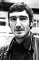

Country:United States, 114 minutes
Spoken languages:English
Genres:Action, Adventure, Comedy, Crime, Thriller
Director(s):Richard Donner
Writer(s):Jeffrey Boam
Video Codec:Unknown
Number: 638


Certification:
Storyline:
In the opening chase, Martin Riggs and Roger Murtaugh stumble across a trunk full of Krugerrands. They follow the trail to a South African diplomat who's using his immunity to conceal a smuggling operation. When he plants a bomb under Murtaugh's toilet, the action explodes!
Cast: 


Medium: Original DVD,
Comments: Part of: 4 Film Favorites - Lethal Weapon
Loaned: No
Aspect ratio: Unknown